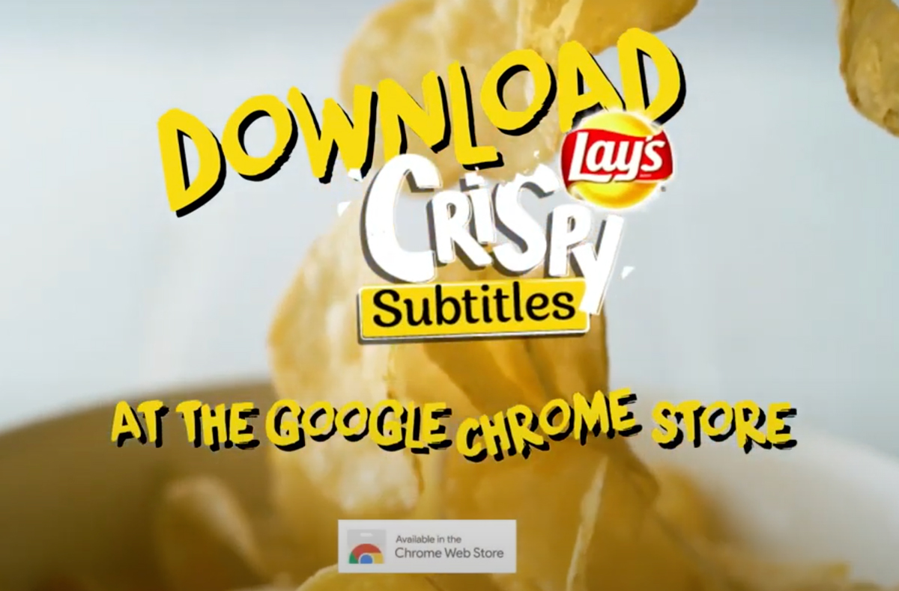

TODAY'S TOPIC
ポテトチップスの咀嚼音を感知するプラグイン？
これはいるのかな、、？でも人によっては便利かも、、？そんなプラグインのご紹介です。(GoogleChrome向け)

img source -(https://tabi-labo.com/299689/wt-chrome-addon-chips-subtitle)
YouTubeや映画を見ている時にポテトチップスは欠かせない！でも咀嚼音で大事なセリフを聞き逃した。。そんな問題を解決してくれる拡張機能をポテトチップスメーカーの「レイズ」が開発しました。
img source -(https://tabi-labo.com/299689/wt-chrome-addon-chips-subtitle)
ポテトチップスを食べていない時は字幕が出ないけれど、
img source -(https://tabi-labo.com/299689/wt-chrome-addon-chips-subtitle)
ムシャムシャ食べ始めると、その音を感知して自動で字幕を表示してくれます。様々なポテトチップスの咀嚼音に対応するため、世界各地でポテトチップスの咀嚼音をデータとして収集したみたいです。
ポテトチップスの咀嚼音で大事な部分を聞き逃してしまったことはないのですが、
ドラマの良いところでペット達が急に鳴きだすみたいな経験はあります笑 その時にパッと字幕出てくれたらいいなあ、と今回このプラグインを知って思いました。